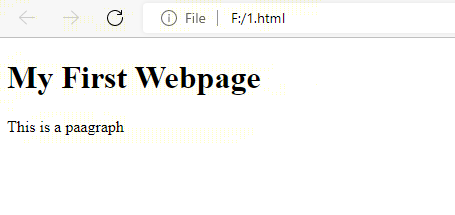

HTML
First of all let us start with the introduction. So what is HTML? It certainly isn't just HTML, It has a meaning.
HTML stands for Hyper Text Markup Language
or to get it straight forwad it is the language for documents which are to be displayed on web browser. HTML is not just a piece of cake that you just cut it and eat it....

Nevermind, lets get back to the subject. First of all, we will learn some basics in html. First we will learn about tags. HTML tags are like keywords which defines that how web browser will format and display the content. With the help of tags, a web browser can distinguish between an HTML content and a simple content. HTML tags contain three main parts: opening tag, content and closing tag. But some HTML tags are unclosed tags.
When a web browser reads an HTML document, browser reads it from top to bottom and left to right. HTML tags are used to create HTML documents and render their properties. Each HTML tags have different properties.
An HTML file must have some essential tags so that web browser can differentiate between a simple text and HTML text. You can use as many tags you want as per your code requirement.
All HTML tags must enclosed within < > these brackets(and there is no space between < >, i have added them due to some coding errors in this website).
Every tag in HTML perform different tasks.
If you have used an open tag < tag >, then you must use a close tag (except some tags).It means that there are two types of tags
1.OPEN TAGS:
these tags have a start point and end point and these tags have to be closed ny the closing tags
FOR EXAMPLE

Here are some basic tags of HTML:
1) Headings < h1 > - < h6 >
2) Paragraphs < p >
3) Linebreak < br >
4) Horizontal Rule < hr >
Headings -
Headings are useful building blocks for content. Whenever you visit a site, you see the different sections described by an appropriate heading. The largest headings are generally for the title. The smaller headings are often used for sub-headings, for one or a couple of paragraphs for instance.
HTML provides 6 headings, from < h1 > to < h6 >. To use them, simply put your heading(s) between the tags.
Paragraphs
When you add a new line (by pressing “Return” key) in a text editor, the pointer automatically moves down. Now you can continue writing on the new line. We have to provide all the layout information on our page using HTML in order for the browser to render the content correctly. We must use < p > around the section of our content to make it a “paragraph” which will automatically surround your paragraph with newlines.
Linebreak
In order to break the line manually; that is, create a new line after a content, You use < br > tag after your section where you need to make a new line. You do not need to close this tag (by using ) like other HTML tags.
Horizontal Rule < hr >
< hr > is used to create a horizontal line below the paragraph. It is used to separate the sections or for easing the reading of your content.
Here is an example:
INPUT

OUTPUT

Ok, now you are able to make your first very simple HTML page.But This is not enough you also have to learn how to customize your website for that you need to learn CSS.